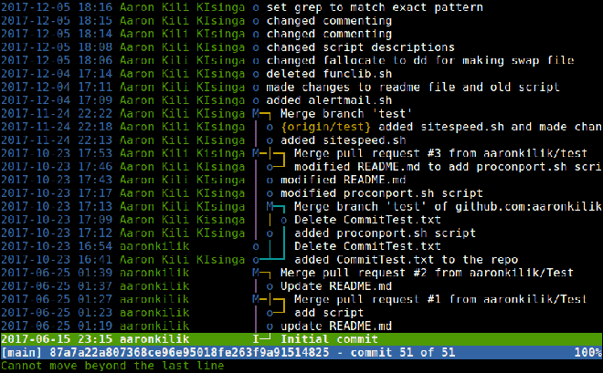
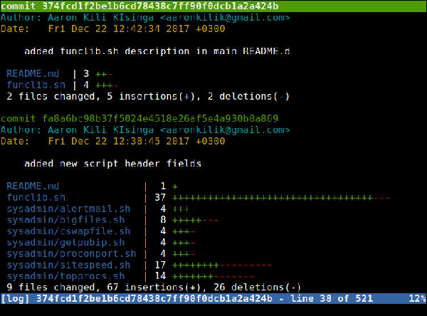
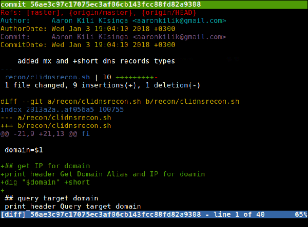
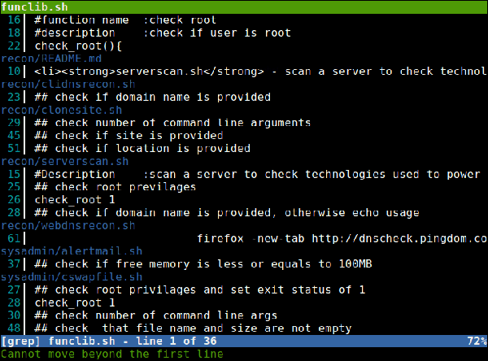
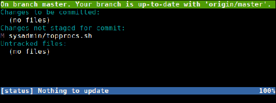

Tig – консольный браузер для репозиториев Git
Оригинал: Tig – A Command Line Browser for Git Repositories
Автор: Aaron Kili
Дата публикации: 11 апреля 2018 года
Перевод: А. Кривошей
Дата перевода: ноябрь 2018 г.
В недавней статье мы описали, как установить и использовать утилиту GRV для просмотра репозиториев Git в терминале Linux. В этой статье мы хотели бы представить вам еще один полезный интерфейс на основе командной строки для git под названием Tig.
Tig - бесплатный кроссплатформенный текстовый интерфейс с открытым исходным кодом для git, основанный на ncurses. Он может помочь в создании изменений для коммитов на уровне блоков и работает как пейджер для вывода из разных команд Git. Он может работать как в Linux, MacOSX, так и в Windows.
Как установить Tig в Linux
Чтобы установить Tig в Linux, вам необходимо сначала клонировать репозиторий Tig в вашу систему и установить его, как показано ниже.
$ git clone git://github.com/jonas/tig.git
$ make
$ make install
По умолчанию tig будет установлен в директории $HOME/bin, но если вы хотите установить его в другой каталог в PATH, установите префикс на нужный путь, как показано ниже.
$ make prefix=/usr/local
$ sudo make install prefix=/usr/local
После того, как вы установили Tig в своей системе, с помощью команды cd перейдите в любой из своих локальных репозиториев git и запустите tig без каких-либо аргументов, при этом он должен показать все коммиты для репозитория.
$ cd ~/bin/shellscripts/
$ tig

Для выхода из Tig нажмите q.
Вывод лога активности репозитория
Для вывода лога активности репозитория используется субкоманда log.
$ tig log

Просмотр объектов репозитория
Субкоманда show позволяет вам более подробно выводить информацию по одному или нескольким объектам, таким как коммиты и многое другое, как показано ниже.
$ tig show commits

Поиск паттернов/слов в файлах Git
Вы также можете произвести поиск определенного шаблона (например, слова "check") в ваших файлах git с помощью команды grep, как показано ниже.
$ qtig statusq

Вывод статуса репозитория Git
Для вывода статуса вашего репозитория git используйте субкоманду status, как показано ниже.
$ tig status

Более подробно с опциями Tig можно ознакомиться в разделе помощи репозитория Tig на Github по адресу https://github.com/jonas/tig.